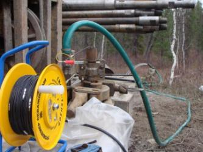

Инженерно-геологические изыскания
АО «СИБГЕОТЕХ» оказывают широкий спектр услуг в сфере инженерно-геологических изысканий для строительства, в том числе особо опасных и технически сложных объектов капитального строительства I-III уровня ответственности.
- Колонковое и шнековое бурение инженерно-геологических скважин;
- Инженерно-геологическую, инженерно-геокриологическую и гидрогеологическую съемки;
-
Полевые и лабораторные определения физико-механических свойств грунтов, в том числе:
- штамповые испытания грунтов, в том числе горячими штампами;
- прессиометрические испытания грунтов;
- определение прочностных характеристик грунтов;
- статистическое и динамическое зондирование грунтов;
- испытания грунтов сваями.
-
Гидрогеологические исследования, том числе:
- кустовые, одиночные, групповые, «экспресс»-откачки воды из скв.;
- опытные выпуски воды из «фонтанирующих» скважин;
- опытные наливы воды в скважины и шурфы;
- опытные нагнетания воды в скв, в том числе с использованием оригинальных тампонов разжимного действия, с использование двойного пневмотампона;
- расходометрию;
- резистивиметрию;
- индикаторные методы;
- Лабораторные исследования грунтов.
